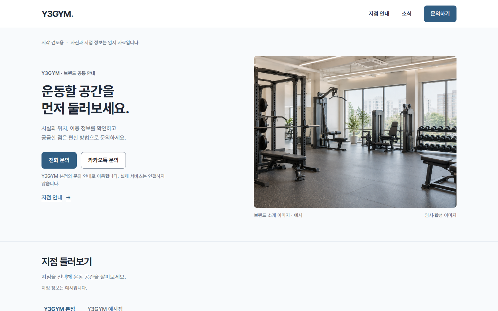
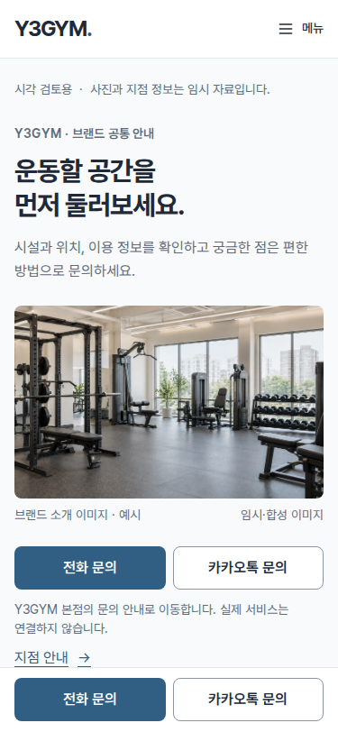
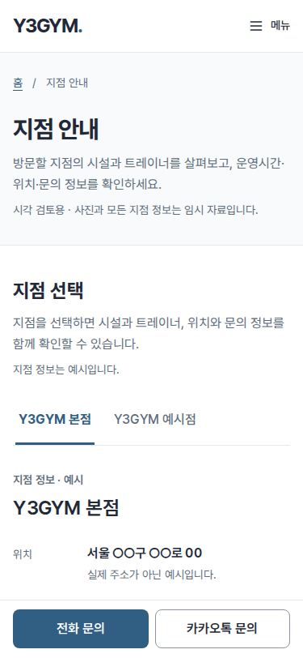
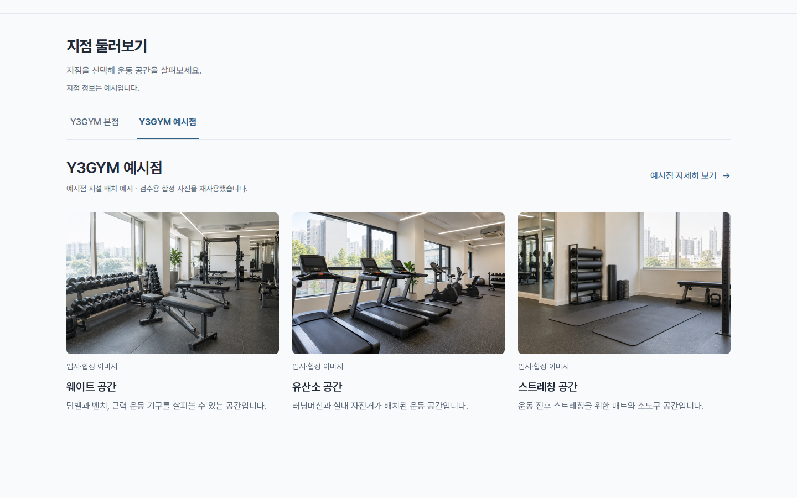
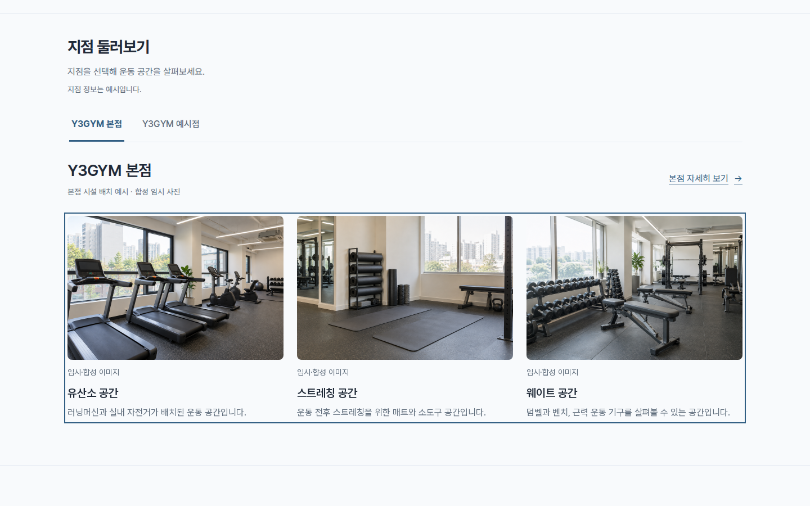
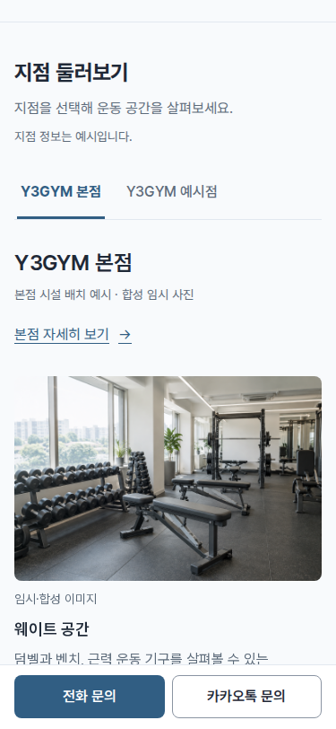
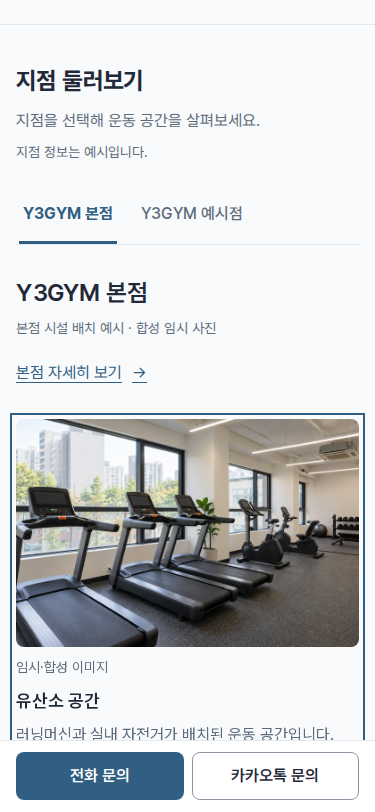

지점과 시설을 하나로 묶었습니다.
홈의 지점 둘러보기와 시설 둘러보기를 하나의 구역으로 합쳤습니다. 지점 탭 아래에 지점명·상세 안내 링크·시설 사진 슬라이드를 함께 표시합니다. A 방향과 본점·예시점 두 지점 예시는 유지합니다.
- 첫 소개 영역의 ‘시설 사진 보기’를 ‘지점 안내’로 바꾸고 별도 지점 안내 페이지에 연결했습니다.
- “시설슬라이드 통과”로 확인받은 지점 안내의 슬라이드를 홈에도 동일하게 적용했습니다. PC 3장·태블릿 2장·모바일 1장 배치에서 버튼 없이 자동 이동하며 모바일 스와이프·키보드 좌우 탐색을 제공합니다.
- 지점을 바꾸면 해당 지점의 첫 사진부터 표시합니다. 지점 안내·문의·소식으로 이동할 때 선택 지점은 계속 유지합니다. JavaScript가 없으면 전체 사진 목록을 제공합니다.
- 기본 예시는 본점·예시점 두 지점이며 모든 사진·이름·운영 정보는 임시 예시입니다. 실제 문의·지도 서비스는 연결하지 않았습니다.
기존 통합 배치는 “ㅇㅋ 이대로 가자”로, 소식 목록과 시설 자동 슬라이드는 “글 목록 통과. 시설슬라이드 통과.”로 확인받았습니다. 후속 요청대로 같은 자동 슬라이드를 홈에 적용하고 아래 캡처를 갱신했습니다. 실제 자동 이동 영상과 공통 슬라이드 검토.
PC 첫 화면 · 1440×900



모바일 첫 화면 · 375×812




통합 지점 둘러보기 · 예시점



사진 전환 · 본점







전체 캡처
| 화면 | PC · 1440px | 모바일 · 375px |
|---|---|---|
| 홈 · 본점 | 전체 보기 | 전체 보기 |
| 홈 · 예시점 | 전체 보기 | 전체 보기 |
| 지점 안내 · 본점 | 전체 보기 | 전체 보기 |
| 지점 안내 · 예시점 | 전체 보기 | 전체 보기 |


전체 캡처는 같은 폭의 긴 뷰포트로 촬영해 고정 문의 바를 맨 아래에 표시합니다. 본문 가림은 실제 375×812 화면 높이에서 별도로 검사했습니다.
두 페이지 × 6개 화면 폭 및 이동 검사 · 8개 슬라이드·연결 동선·실패 상태 검사 · 이전 홈·지점 안내 분리 이력